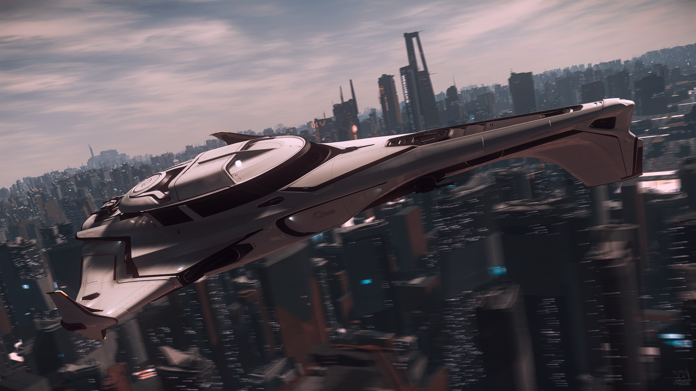

400 Series
Models
400i
The 400i is a high-performance luxury pathfinder manufactured by Origin Jumpworks. With greater range compared to other ships in its class, advanced exploration equipment, and substantial defensive capabilities, the 400i is a ship that can explore the most unforgiving sectors of the 'verse while retaining the comfort and elegance that Origin is well known for.

Features
- Luxury Crew Accommodation: The beautifully crafted interior features amenities far surpassing any other ship in its class, ensuring absolute crew comfort even in the most remote regions of space.
- Defense: The 400i features a size 3 shield generator, two S3 Panther Repeaters mounted forward, and two rear-mounted remote turrets that each mount two more S3 Panther Repeaters. It also boasts generous ordnance capacity with 16 size 2 and 16 size 1 missiles.
- X1 Bike Bay: The front nose section contains a vehicle bay designed to hold the Origin X1, which allows you to explore locally. Access is via a drop down platform.
- UEE-Standard Docking Collar: Located on the port side of the ship, this gives you the ability to dock to stations or other ships without exposure to the surrounding environment.
- Airlock room: Thanks to this airlock, crew can access hostile environments either via the stepped platform or the side docking collar and not expose the rest of the ship.
- Easy Cargo Access: Effortless access to the ship's 42 SCU of internal storage via a drop down platform.